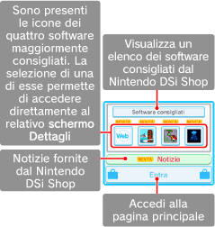
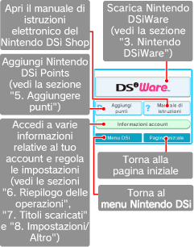

● Pagina iniziale
Qui potrai trovare i software consigliati e importanti notizie.

● Pagina principale
Tocca i pannelli sul touch screen per scaricare software esclusivi per Nintendo DSi (Nintendo DSiWare) o per cambiare le impostazioni del Nintendo DSi Shop.
